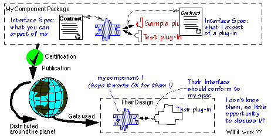

Components need stricter specification

In a traditional software house, when a team designs an application in encapsulated
modules, they have the opportunity to talk to each other about the interfaces.
Any that is poorly understood can be discussed with the guy across the partition.
And any gaps or inconsistencies that are discovered only at the detailed
design stage - well, they're inconvenient and costly, but software
engineers have become used to fighting such fires and can usually make a
reasonable show by the delivery deadline.
I think we've got into bad habits. This way of going about things has been
"just the way the world works" to too many generations of software
designers. And though it might work reasonably well where most chunks of
code will belong only to one application, it cannot be a recipe for economic
success when we are attempting to build from generic components.
There's a habit-changing requirement here: just like many other aspects
of re-use, specifying interfaces needs a shift in the way we do things,
and the aquisition of some new skills.
Buildings architects do not expect to get away without some element of formal
specification and reasoning in their work. You do not just put up buildings
with very thick buttresses and hope they don't fall down; not since the
Middle Ages. In software engineering, we are still largely in mediaeval
times - we could do with paying more attention to precision. That isn't
to say that creating software isn't an art: it's an art like architecture
is, with a stringent underpinning. Architects have produced far more graceful
designs since they learned some maths.
How this argument strikes you is to some extent personality-dependent: some
people are more analytical, and some more creative. Experience with component
libraries suggests that the analytical types are good to assign to the development
and honing of the library contents, while the others enjoy putting the pieces
together to make something externally deliverable. (Which might of course
be a bigger component.)
Precision (software) engineering
Component based design needs tool support. Tools cannot provide much useful
help with informal text and diagrams: the language needs a precise meaning.
Since our definition of a useful component includes more than just program
code - indeed, some of the most widely useful are patterns - we need a language
in which to express them precisely enough for tools to be able to combine
them.
Specify the Interfaces
Even for components that do take the form of code, it is necessary to define
interfaces - that is, to say what one component expects of whatever other
it is connected to. Lists of operations are not really sufficient for this
purpose, because they don't include information about what the operations
actually are expected to do. Whilst in a closed programming environment,
it may be feasible to plug components together by conferring with your colleagues
informally, this is not feasible when components may be distributed worldwide:
then, more effort must be spent on unambiguous specification
CBD Intro p; Kent &
Wills